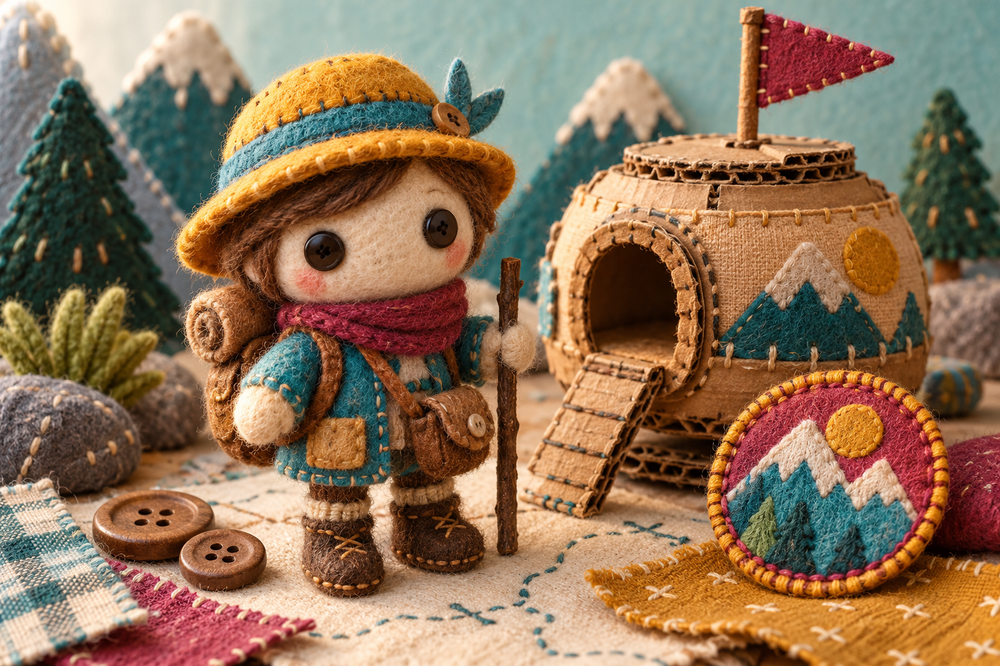

Sticker-book piece
Choose a patch
Choose a patch to preview it.
Craft atlas / specimen 01
Small parts for a sticker book, costume bench, and level-pod shelf.

Sticker-book piece
Choose a patch to preview it.
Costume-workbench piece
Swatches are previews until applied.
Level-pod piece
Choose a pod to preview its status.